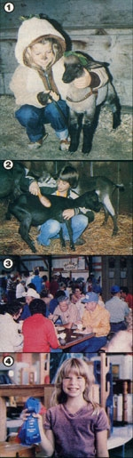

For an affordable, educational, sociable, and just plain enjoyable family vacation, try...
Five years ago my family and I left the city behind and chose the homesteading way of life. With a lot of help from MOTHER and various other books and publications, we've since learned how to care for animals, vegetables, and ourselves in the country. As you might imagine, though, we've experienced our share of surprises while adapting to a rural lifestyle . . . but one of the biggest-and most delightful-eye-openers we discovered was that economical homesteader's vacation: the county fair!
FIRST TIME AROUND
We first became acquainted with our region's annual get-together when Barb, our eldest child, joined the local 4-H club during our first year on the farm. As part of her group's activity, she put together several displays-in sewing, cooking, and crafts-to enter in the competitions at the county fair that summer.
Since we were all swamped with farmstead work at the time, we simply drove down to the fairgrounds, dropped of Barb's exhibits, and high-tailed it back home to our chores. A few days later we returned to retrieve her projects . . . only to find that she'd actually won a couple of ribbons! Spurred on by the excitement of that pleasant surprise, we decided to take a look around and see just what the county fair might have to offer.
We soon found that there was a lot more going on there than we'd ever dreamed possible. In fact, what with all the prize livestock, jars of homemade jellies and jams, intriguing crafts and 4-H exhibits, steaming victuals, and friendly people (many of whom were homesteaders just like us) bustling about, the fair had more activity than we could ever take advantage of during a single "drop-in" visit.
Why, we enjoyed ourselves so much that we soon decided four days at the fair might make a pleasurable vacation the next year . . . and one that we could afford even on our "scrimper's" budget. After all, if we camped out, our only expenses would be food and gas.
ON TO THE SHOW
So the following year we took a family vacation trip to the fair . . . and had such a grand time that the jaunt has since become an eagerly anticipated annual event. Each summer we pack up our car and truck with sundry displays, animals, and camping equipment . . . and head on down the road to the county fairgrounds.
We've become more active participants in the festivals, too. Our family's entries have boomed from those first few exhibits of Barb's to 63 displays last summer! David, our middle child and a 4-H'er now, enjoys taking his prize goat (along with several other entries), and Barb has added her geese to the truckload. Even Kelly, our youngest (who's not quite old enough to be a 4-H member yet) can enter cooking and art competitions, and show her lamb in the pet/ owner look-alike contest. My husband Don gets caught up in "fair fever", too . . . he brings along his mineral and arrowhead collections. And-not to be outdone-I always enter a selection of my favorite homecanned pickles, jellies, and fruits.
FAIR PLAY
Participating in various fair contests has been a motivating and exciting experience for my family, too, and especially for the children. Barb and David, for instance, first learned how to plant and care for their own gardens because they wanted to get in on the county produce displays. Likewise, the livestock judging we saw at the fair that first summer got our family started raising our own chickens, a milk goat, and other farm animals. Furthermore, the prospect of an upcoming fair's prizes and compliments probably also helps our youngsters continue to face such unexciting caretaker's chores as cleaning out a manure-filled chicken coop and milking the goat on frigid January mornings!
The contests have even helped pay for our vacation. In fact, this past summer we made about $75 in prizewinners' "premiums" . . . which was more than enough to cover our gas, meals, and gate charges!
But don't get me wrong. The county fair isn't just an opportunity to display the fruits of our year's labors. Oh no . . . we find plenty of other things to do besides set up exhibits. There are how-to demonstrations and workshops to attend (on topics like craftmaking and canning techniques) ... all those delicious homegrown and home-cooked foods to sample . . . and, of course, the traditional supplies of hot dogs and such that just beg to be eaten up.
In addition, a county fair provides a rare chance to get together with friendly, happy folk of all ages who are eager to share a laugh or a home remedy. Nurturing new and old friendships is, ultimately, the most enjoyable and enduring benefit of our county fair experiences.
All in all, we heartily recommend this homesteader's holiday to anyone who enjoys a little healthy competition among neighbors, an inexpensive (why, heck . . . it's practically free!) good time, and the company of other "good life"-minded country folk. For a vacation that the whole family will enjoy, you flat can't beat a few days at the county fair!
|
 |
|
|